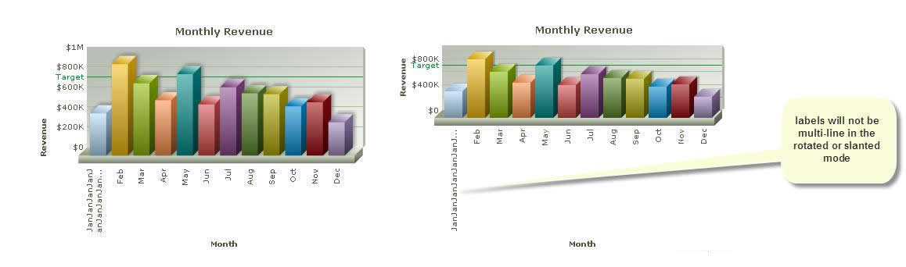
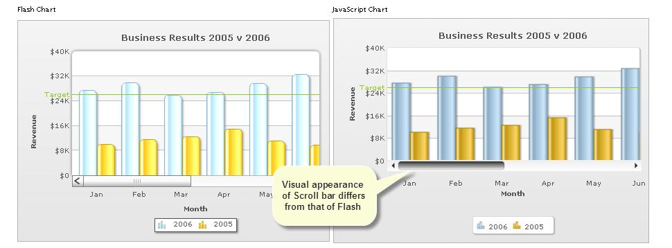
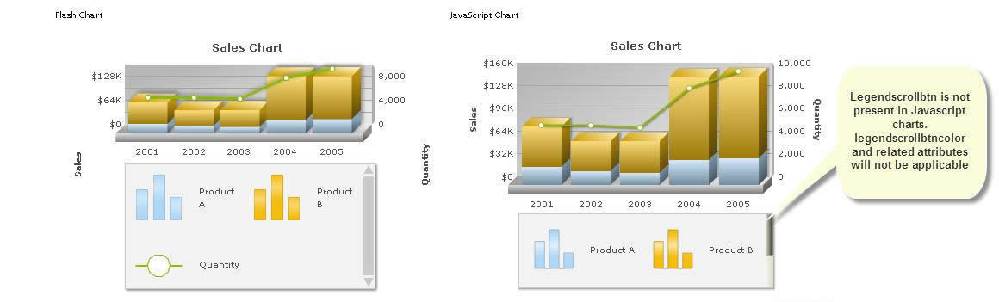
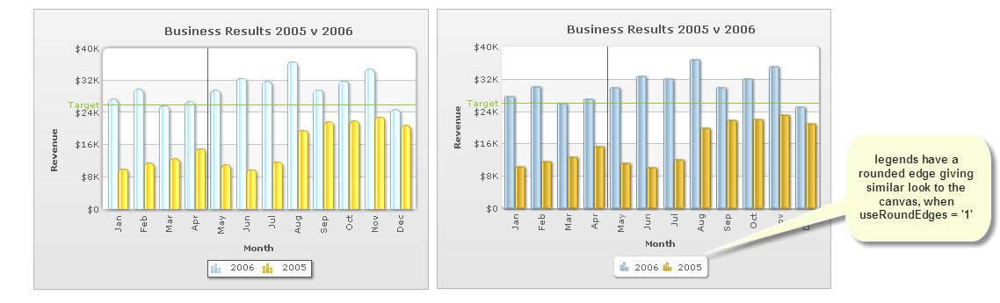
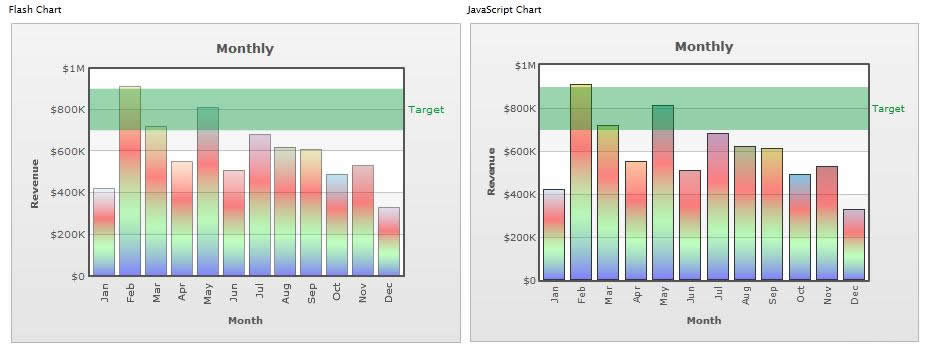
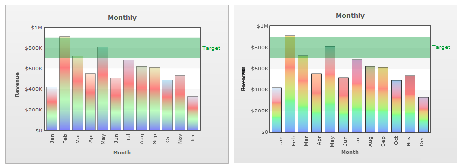

In FusionCharts XT, you can render the charts on devices where Flash player is not supported (like in iPhone or iPad), is not installed or is disabled using the built-in JavaScript rendering capabilities. The charts rendered by this module are purely using JavaScript and do not need Flash Player at all.
FusionCharts XT gives you the option of either using automatic fallback, wherein the charts figure out the best mode of rendering (either Flash or JavaScript, based on availability of Flash Player), or lets you configure whether to render charts exclusively using JavaScript. If you are already using FusionCharts XT and wish to add JavaScript fallback, you just need to replace the old SWF and JavaScript files with the new ones - without changing a single line of code.
In case you wish to render JavaScript charts only, irrespective of whether Flash Player is installed or not, all you need to do is add a single line of code to your existing implementation. This has been covered in forthcoming sections. Meanwhile, let's get a small overview of FusionCharts XT JavaScript charting capabilities.
FusionCharts XT features a completely new FusionCharts JavaScript class. FusionCharts JavaScript class now consists of four main files: FusionCharts.js, FusionCharts.HC.js, FusionCharts.HC.Charts.js and jquery.min.js. These four files are present in Download Pack > Charts folder. You will only need to include FusionCharts.js in your Web page (however, do not forget to copy the rest of files to your web application). The rest of the JavaScript files will be automatically loaded on-demand by FusionCharts.js.
Once FusionCharts class determines that Flash player is not available in the device, it automatically switches the rendering mode to JavaScript. If you wish to render the chart as JavaScript by default, you can do this by setting the rendering method to JavaScript from your code.
Given below is the list of chart types supported by the FusionCharts JavaScript renderer:
| Chart Type | JavaScript Chart Alias | Flash file (SWF Name) |
| Single Series Charts | ||
| Column 3D | Column3D | Column3D.swf |
| Column 2D | Column2D | Column2D.swf |
| Line 2D | Line | Line.swf |
| Area 2D | Area2D | Area2D.swf |
| Bar 2D | Bar2D | Bar2D.swf |
| Pie 2D | Pie2D | Pie2D.swf |
| Pie 3D | Pie3D | Pie3D.swf |
| Doughnut 2D | Doughnut2D | Doughnut2D.swf |
| Doughnut 3D | Doughnut3D | Doughnut3D.swf |
| Pareto 2D | Pareto2D | Pareto2D.swf |
| Pareto 3D | Pareto3D | Pareto3D.swf |
| Multi-series Charts | ||
| Multi-series Column 2D | MSColumn2D | MSColumn2D.swf |
| Multi-series Column 3D | MSColumn3D | MSColumn3D.swf |
| Multi-series Line 2D | MSLine | MSLine.swf |
| Multi-series Bar 2D | MSBar2D | MSBar2D.swf |
| Multi-series Bar 3D | MSBar3D | MSBar3D.swf |
| Multi-series Area 2D | MSArea | MSArea.swf |
| Marimekko | Marimekko | Marimekko.swf |
| Zoom Line | ZoomLine | ZoomLine.swf |
| Stacked Charts | ||
| Stacked Column 3D | StackedColumn3D | StackedColumn3D.swf |
| Stacked Column 2D | StackedColumn2D | StackedColumn2D.swf |
| Stacked Bar 2D | StackedBar2D | StackedBar2D.swf |
| Stacked Bar 3D | StackedBar3D | StackedBar3D.swf |
| Stacked Area 2D | StackedArea2D | StackedArea2D.swf |
| Multi-series Stacked Column 2D | MSStackedColumn2D | MSStackedColumn2D.swf |
| Combination Charts | ||
| True 3D Chart (Multi-series 3D Single Y Combination chart - Column + Line + Area) | MSCombi3D | MSCombi3D.swf |
| Multi-series 2D Single Y Combination Chart (Column + Line + Area) | MSCombi2D | MSCombi2D.swf |
| Multi-series Column 3D + Multi-series Line - Single Y Axis | MSColumnLine3D | MSColumnLine3D.swf |
| Stacked Column2D + Line single Y Axis | StackedColumn2DLine | StackedColumn2DLine.swf |
| Stacked Column3D + Line single Y Axis | StackedColumn3DLine | StackedColumn3DLine.swf |
| Multi-series 2D Dual Y Combination Chart (Column + Line + Area) | MSCombiDY2D | MSCombiDY2D.swf |
| Multi-series Column 3D + Multi-series Line - Dual Y Axis | MSColumn3DLineDY | MSColumn3DLineDY.swf |
| Stacked Column 3D + Line Dual Y Axis | StackedColumn3DLineDY | StackedColumn3DLineDY.swf |
| Multi-series Stacked Column 2D + Line Dual Y Axis | MSStackedColumn2DLineDY | MSStackedColumn2DLineDY.swf |
| XY Plot Charts | ||
| Scatter Chart | Scatter | Scatter.swf |
| Bubble Chart | Bubble | Bubble.swf |
| Scroll Charts | ||
| Scroll Column 2D | ScrollColumn2D | ScrollColumn2D.swf |
| Scroll Line 2D | ScrollLine2D | ScrollLine2D.swf |
| Scroll Area 2D | ScrollArea2D | ScrollArea2D.swf |
| Scroll Stacked Column 2D | ScrollStackedColumn2D | ScrollStackedColumn2D.swf |
| Scroll Combination 2D (Single Y) | ScrollCombi2D | ScrollCombi2D.swf |
| Scroll Combination 2D (Dual Y) | ScrollCombiDY2D | ScrollCombiDY2D.swf |
| Others | ||
| Single Series Grid Component | SSGrid | SSGrid.swf |
FusionCharts XT in its JavaScript flavor essentially tries to provide a uniform visualization experience on desktop and mobile platforms by rendering FusionCharts using advanced HTML5 capabilities of devices that does not support Flash. However, due to the inherent difference between the technologies and differences in various browsers causes minor disparity between the Flash and JavaScript variants of the charts.
Nature of Configuration
Due to various reasons, there are minor implementation differences between Flash and JavaScript variants of our charts. Almost all such differences have workarounds to make them appear same using the same data configuration. Listed below are the major ones:
| |
Lack of multi-line support when axis labels are rotated or slanted |
 | |
| Visual difference in Scroll-bars | |
  |
|
| Visual difference when round edges is applied to 2D charts using useRoundEdges = '1' | |
|
 |
Browser Dependency
JavaScript and HTML5 are browser dependent features and every browser has certain differences in the way they handle implementation of HTML5 support. Hence, however hard we try to bridge the difference, there is still a likelihood of minor differences to be encountered when comparing the same chart configuration on various browsers.
For example, for a column chart with plotGradientColor='ff0000,00ff00,0000ff' and plotfillalpha='50,100,50' in its <chart> attribute list, there is a difference in the way IE (below IE 9) handles alpha (opacity) of colors. On FireFox and other browsers supporting SVG the chart will look like the following:

However on IE 6,7 and 8 supporting VML the same chart will be rendered as the following image:
